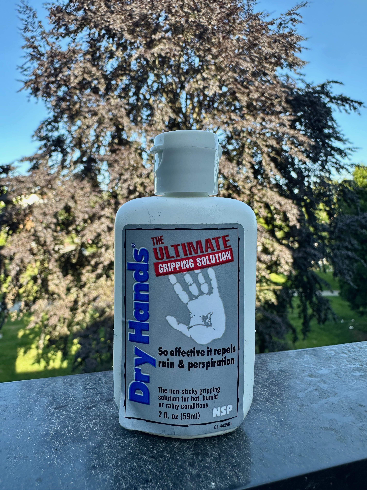
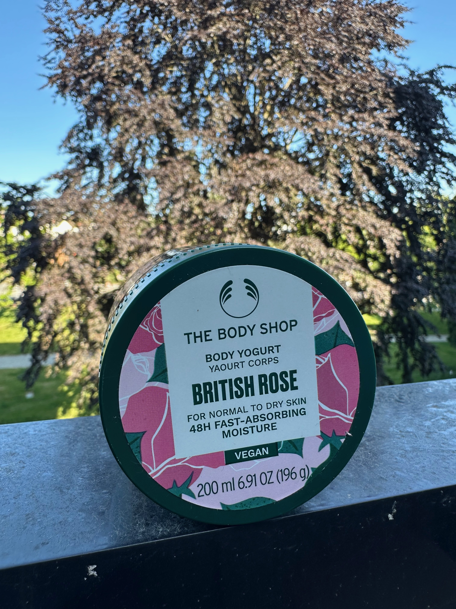

No Grip? 7 Little Helpers to Make You Stick
Posted May 31, 2025

Whether you're pole dancing or working on a "naked" aerial apparatus like an untaped lyra, grip can be a challenge. Too often, what stands between you and a successful move is sweaty hands. Over the years, I have experimented with many different products. While every body and skin type is different, here is what works for me:
Hands
Most people struggle with sweaty hands. Especially when nervousness sets in, your hands might start sweating before you even touch the pole. Hand grips to the rescue.
1. Dry Hands
The classic for sweaty hands. Great for pole, but it can dry out your skin with frequent use. I try to keep it to a minimum, but it certainly helps in the short term.
2. Tite Grip
Good as a pre-grip aid to stop hands from sweating. I apply this early (usually before warm-up) for critical sessions, like a showcase or competition.
3. Good Old Alcohol Wipes
Not a grip aid per se, but keeping your skin and pole clean helps a lot. On hot days, I do this between each attempt.
Body Grip
Body skin can have quite different characteristics. For me, I tend to have very dry skin. Unless I get really sweaty, I need a little boost to make my skin stick. Regular lotions often make it too slippery, especially when applied less than 24 hours before training. So here is what I use instead:
1. Grip + Glow Body Grip - Coming Up Roses
My favorite — it is essentially glycerin in a spray bottle with sparkle and fragrance.
2. Dew Point
Similar to Grip + Glow: a glycerin spray that adds some tackiness to my skin, just without the shine and fragrance. This can be a positive for people sensitive to fragrances.
3. The Body Shop - Body Yogurt
My regular skin care product. Again, it is glycerin-based. I’ve found I can apply it in a modest amount even before I go on the pole.
4. iTac2
The killer product in case you need to glue yourself to the pole. I see it being used in showcases or competitions. Be careful, though — once it sticks it sticks, and it can take some effort to get it off the pole again. Your pole cleaners will thank you if you keep it to a minimum.
Always test products first — everyone’s skin and training context is different!
What are your favorite grip aids? Leave a comment or DM me on Instagram at @happy.face.biggi!